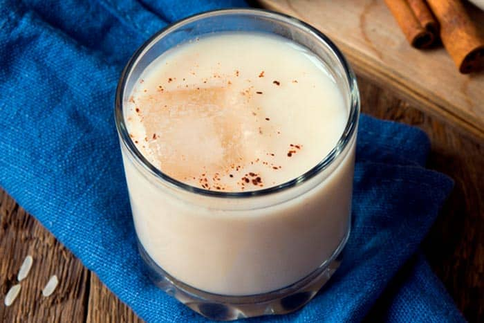

Chicha recipe

Venezuelan Chicha
Venezuelan Chicha is a refreshing rice-based drink popular in Venezuela,
sweet and creamy,often flavored with cinnamon and condensed milk.
Ingredients
- Rice
- Water
- sugar
- vanilla extract
- cinnamon and condensed milk (optional)
Steps
- Rinse 1 cup of rice and place it in a pot with 4 cups of water.
- Add 2 cinnamon sticks to the pot and bring the mixture to a boil.
- Reduce the heat and let it simmer for about 30 minutes or until the rice is cooked.
- Remove the cinnamon sticks and let the rice mixture cool.
- Once cooled, blend the rice mixture in a blender until smooth.
- Return the blended mixture to the pot and add 1 cup of condensed milk and ½ cup of sugar.
- Stir well and simmer for another 10 minutes.
- Remove from heat and let it cool.
- Stir in 1 teaspoon of vanilla extract.
- Serve the chicha de arroz chilled and enjoy!